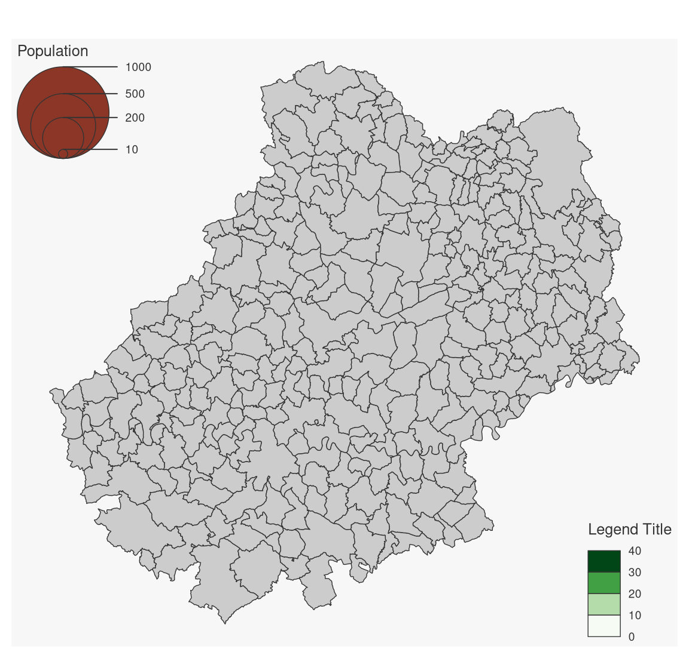
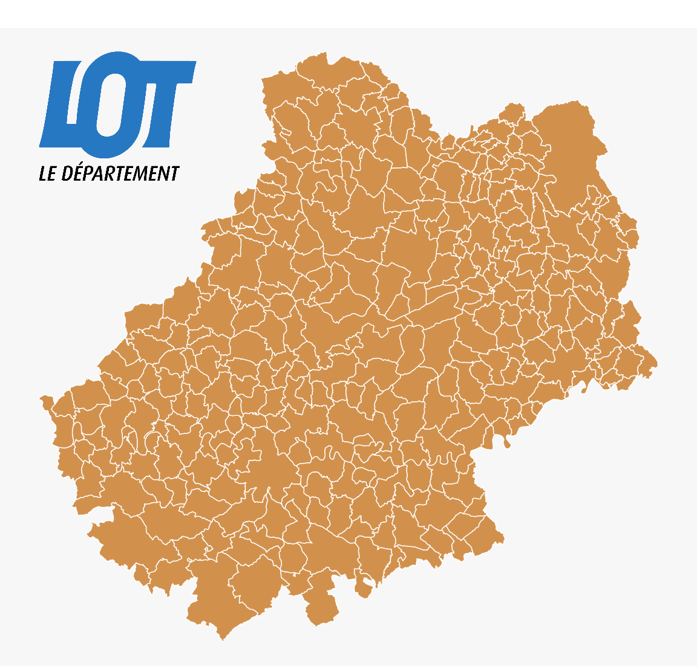

Pour être finalisée, une carte thématique doit contenir certains éléments additionnels tels que : le titre, l’auteur, la source, l’échelle, l’orientation…
4.1 Les données d’exemple
Les lignes suivantes importent les couches d’information spatiales situées dans le fichier geopackagelot.gpkg.
library(sf)
#> Linking to GEOS 3.11.1, GDAL 3.6.2, PROJ 9.1.1; sf_use_s2() is TRUE
# import des communes du Lotcom <-st_read("data/lot.gpkg", layer ="communes", quiet =TRUE)# import des départements françaisdep <-st_read("data/lot.gpkg", layer ="departements", quiet =TRUE)# import des restaurantsresto <-st_read("data/lot.gpkg", layer ="restaurants", quiet =TRUE)# import des routes autour de la commune de Gramatroute <-st_read("data/lot.gpkg", layer ="routes", quiet =TRUE)
4.2 Les thèmes
La fonction mf_theme() définit un thème cartographique. L’utilisation d’un thème permet de définir plusieurs paramètres graphiques qui sont ensuite appliqués aux cartes créées avec mapsf. Ces paramètres sont : les marges de la carte, la couleur principale, la couleur de fond, la position et l’aspect du titre.
4.2.1 Utiliser un thème prédéfini
Une série de thèmes prédéfinis est disponible par défaut (voir ?mf_theme).
Il est possible de modifier un thème existant. Dans cet exemple, nous utilisons le thème “default” et nous en modifions quelques paramètres.
library(mapsf)mf_theme("default")mf_map(com)mf_title("default")mf_theme("default", tab =FALSE, font =4, bg ="grey60", pos ="center")mf_map(com)mf_title("modified default")
4.2.3 Créer un thème
Il est également possible de créer un thème.
mf_theme(bg ="lightblue", # couleur de fondfg ="tomato1", # couleur principalemar =c(0,0,1.5,0), # margestab =FALSE, # style "onglet" pour le titreinner =FALSE, # titre à l'intérieur de la zone de carte ou à l'extérieurline =1.5, # espace dédié au titrepos ="center", # position du titrecex =1.2, # taille du titrefont =2# type de fonte pour le titre)mf_map(com)mf_title("New theme")
La fonction mf_title() permet d’ajouter un titre à une carte.
mf_theme("default")mf_map(com)mf_title("Titre de la carte")
Il est possible de personnaliser l’aspect du titre.
mf_map(com)mf_title(txt ="Titre de la carte", pos ="center", tab =FALSE, bg ="tomato3", fg ="lightblue", cex =1, line =1.2, font =1, inner =FALSE)
4.4 Flèche d’orientation et échelle
La fonction mf_arrow() permet de choisir la position et l’aspect de la flèche d’orientation.
La fonction mf_scale() permet de choisir la position et l’aspect de l’échelle.
La fonction mf_label() est dédiée à l’affichage d’étiquettes.
# Selection des communes qui intersectent la # commune de Cahorscom_sel <-st_filter(com, com[com$NOM_COM =="Cahors", ])mf_map(com_sel)mf_label(x = com_sel,var ="NOM_COM",col="black",halo =TRUE,overlap =FALSE, lines =FALSE)mf_scale()
L’argument halo = TRUE permet d’afficher un léger halo autour des étiquettes et l’argument overlap = FALSE permet de créer des étiquettes ne se recouvrant pas.
4.9 Les légendes
La fonction mf_legend() permet d’afficher des légendes.
mf_map(com)mf_legend(type ="prop", val =c(1000,500,200,10), inches = .4, title ="Population", pos ="topleft")mf_legend(type ="choro", val =c(0,10,20,30,40),pal ="Greens", pos ="bottomright", val_rnd =0)

Le package maplegend
La fonction mf_legend() s’appuie sur le package maplegend
4.10 Centrer la carte sur une région
La fonction mf_map() permet d’initialiser une carte en la centrant sur une objet spatial en choisissant un fond et des bordures transparantes.
mf_map(x = com_sel, col =NA, border =NA)mf_map(com, add =TRUE)mf_map(com_sel, col =NA, border ="red", lwd =2, add =TRUE)
4.11 Afficher plusieurs cartes sur la même figure
Il faut ici utiliser l’argument mfrow de la fonction par(). Le premier chiffre représente le nombre lignes et le deuxième le nombre de colonnes.
Par exemple par(mfrow = c(1, 2)) (1 ligne et 2 colonnes) permet d’afficher deux cartes côte à côte.
Notons ici l’utilisation des arguments inches et val_max avec des valeurs identiques pour les deux carte. Cela rend possible les comparaisons entres les deux cartes.
mf_export() permet d’exporter des cartes en PNG ou en SVG.
Le ratio hauteur/largeur de la carte correspondra au ratio hauteur/largeur d’un objet spatial.
Si width est spécifié alors height est déduit du ratio hauteur/largeur de x, de la taille des marges de la figure et des dimensions du titre (du thème utilisé en somme). mf_export() peut aussi être utilisé pour ajouter de l’espace sur un ou plusieurs côté de la carte ou encore centrer la carte sur une zone particulière.
Toujours utiliser add = TRUE après un appel à mf_export() et ne pas oublier d’utiliser dev.off() pour finaliser l’export de la figure.
Cela peut être utile pour ajouter un logo, un pictogramme. La fonction readPNG() du package png permet l’ajout d’images sur une figure.
mf_theme("default", mar =c(0,0,0,0))library(png)# import de l'imagelogo <-readPNG("img/Logo CG 46 - Bleu.png")# dimension de l'image en unité de la cartepp <-dim(logo)[2:1] *20# Définition d'un point d'encrage de l'image dans la figure, ici# le coin supérieur gauche de la bounding box du départementxy <-st_bbox(com)[c(1,4)]mf_map(com, col ="#D1914D", border ="white")rasterImage(image = logo,xleft = xy[1],ybottom = xy[2] - pp[2],xright = xy[1] + pp[1],ytop = xy[2])

4.14 Placer précisément un élément sur la carte
Dans plusieurs fonctions de mapsf il est possible de placer des éléments d’habillage de manière interactive avec la position “interactive”.
Plus généralement la fonction locator() permet de cliquer sur une figure et d’obtenir les coordonnées d’un point dans le système de coordonnées de la figure (de la carte). locator()peut être utilisée sur la plupart des graphiques (pas ceux produits avec ggplot2).
4.15 Ajouter un ombrage à une couche
La fonction mf_shadow() permet de créer une ombre à une couche de polygones.
La fonction mf_inset_on() permet de démarrer la création d’un carton. Il faut ensuite “refermer” le carton avec mf_inset_off().
biars <- com[com$NOM_COM =="Biars-sur-Cère", ]# affichage de toutes les communesmf_map(com)# affichage de la sélection de communesmf_map(biars, col ="tomato4", border ="tomato1", lwd =2, add =TRUE)# Démarrer le carton # en haut à gauche sur# le ratio width/height de biars# avec une largeur d'1/4 de la largeur de la figuremf_inset_on(x = biars, pos ="topleft", cex = .25)# couleur du fondmf_theme(bg ="#f7f7f7")# affichage de la commune ciblemf_map(biars, col ="tomato4", border ="tomato1")# affichage des communesmf_map(com, col =NA, add =TRUE)# échellemf_scale(size =1, pos ="bottomright")# affichage d'un cadrebox()# Fermer le cartonmf_inset_off()# Ajouter titre et échellemf_title("Biars-sur-Cère")mf_scale(10, pos ='bottomright')
Carton “carte du monde”
On peut facilement créer un carton avec la position d’un point sur une carte du monde en combinant les fonctions mf_worldmap() et mf_inset_on(x = "worldmap", ...) :
mf_map(com)mf_inset_on(x ="worldmap",cex = .3, pos ="topleft")mf_worldmap(com)mf_inset_off()mf_title("Le Lot dans le Monde!")